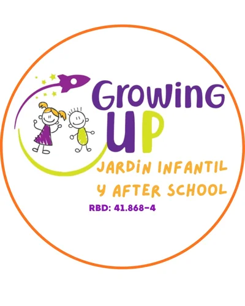

Establecimiento nuevo o autorización de funcionamiento
Revisa las condiciones del espacio y los antecedentes disponibles antes de definir tu proyecto de infraestructura.
ARQUITECTURA · EDUCACIÓN
Asesoría técnica para revisar tu infraestructura, ordenar antecedentes y definir el siguiente paso ante la Seremi de Educación.
¿Necesitas apoyo técnico-pedagógico?Cuéntanos en qué etapa está tu establecimiento.
La primera conversación permite orientar tu consulta.

01 / PUNTO DE PARTIDA
El primer paso cambia según tu proyecto. Identifiquemos qué necesitas revisar antes de avanzar.
Revisa las condiciones del espacio y los antecedentes disponibles antes de definir tu proyecto de infraestructura.
Ordena las necesidades de espacios y documentación para analizar los cambios de tu establecimiento.
Reúne las observaciones y el expediente para evaluar alternativas de respuesta técnica.
LA EXPERIENCIA DE UN ESTABLECIMIENTO

«En Growing Up Jardín Infantil y estamos profundamente agradecidos con el equipo de Logos Arquitectura. Su gestión fue clave para lograr con éxito la regularización de nuestro jardín infantil y hacer realidad el proyecto de nuestra nueva sala cuna. Manejan al detalle las exigentes normativas de infraestructura educacional y lograron crear espacios seguros, cálidos y 100% funcionales para nuestros niños. ¡Totalmente recomendados por su profesionalismo, cercanía y eficiencia!»
Testimonio sobre regularización de jardín infantil y proyecto de sala cuna.
02 / MÉTODO DE TRABAJO
La consulta inicial orienta. Una evaluación técnica requiere revisar antecedentes y acordar una propuesta.
Tipo de establecimiento, comuna y etapa del proyecto. No necesitas adjuntar documentos sensibles en el primer mensaje.
Identifica los planos, documentos u observaciones que tienes disponibles para enfocar la revisión.
Antes de contratar, define entregables, honorarios, responsables y plazos. Las resoluciones corresponden a la autoridad competente.
03 / ANTES DE CONVERSAR
Sí. Describe tu situación y qué antecedentes tienes. La conversación inicial permite identificar qué información podría hacer falta.
No. El trabajo técnico prepara antecedentes y acompaña gestiones dentro del alcance contratado. La autoridad competente evalúa y resuelve cada solicitud.
Después de revisar el caso se debe acordar una propuesta. Es importante distinguir el trabajo del asesor, los costos de terceros y los tiempos de organismos externos.
OTRAS ÁREAS DE LOGOS
EMPECEMOS POR TU SITUACIÓN